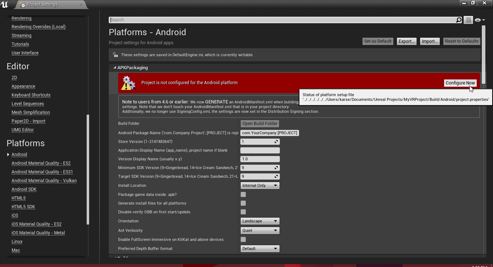

Setting up the project
Here we will setup the project.Part 1: Installing Android tools
1. Install CodeWorks. You can find it in Epic Games/4.14/Engine/Extras/AndroidWorks/Win642. Press next through all of the dialogs until you get a screen like below. Leave the defaults and install, accepting the licenses.

3. When finished installing, restart if asked and head over to C:/NVPACK/android-sdk-windows/ and open SDK Manager.exe
Scroll down until you find Android 7.0 (API 24) and check it. Click install packages on the bottom right, accepting the licenes.
Note: For a faster download time/less space open the Android 7.0 dropdown and only selecting "SDK Platform, Google APIs, and Sources for Android SDK."
Part 2: Creating the project
1. Create a new blank blueprint project with mobile/scalable/no starter content.2. Copy the controller plugin from your empty C++ project created earlier and paste it into the Plugins folder of this project.
3. Go to Edit->Project Settings
4. Engine->Input: Click "Default Touch Interface" and click "Clear"

5. Platforms->Android: Click both "Configure Now" buttons in the red boxes.

Set the package name, SDK versions to 24, and enable fullscreen immersive.
Check "arm64".
Note: You may need to uncheck "armv7".
Check "Configure for deployment to Daydream" and "Configure GoogleVR Deployment Mode" to "Daydream".
Note: You can also enable sustained-performance mode which will allow the app to run longer without overheating.
6. Platforms->Android SDK: Select the folder for each item, and the SDK API levels to "android-24"
7. Close out of that window and go to Edit->Plugins.
8. Built-In: Virtual Reality: Disable everything but Google VR.
9. Project (at the bottom): Input Devices: Check Google VR Motion Controller.
10. Close out of the Plugins window and create a folder called "Blueprints" and a new blueprint named "VRCharacter".
11. Click Add Component, "Camera", and move it up a bit.
12. Minimize that window and create a new Gamemode called "VRGamemode".
14. Set the Default Pawn Class to VRCharacter.
15. In World Settings, set the GameMode Override to VRGamemode.
Note: If you do not see this tab go to Window->World Settings.
16. Make a new folder called Maps outside of the Blueprints folder and save the map inside.
Congrats! You have created the base project!
Move on to the next tutorial